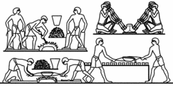

Chimia... pretutindeni în viața de zi cu zi ...
Evoluția chimiei ca știință
„Alchimistul căutând piatra filozofală, pictură deJoseph Wright of Derby ilustrând de fapt descoperirea fosforului de către Hennig Brandt„
Istoria chimiei începe încă din antichitate, când omul primitiv începe să transforme mediul înconjurător pentru îmbunătățirea condițiilor de viață și continuă și în zilele noastre, când sunt descoperite o multitudine de noi materiale, necesare în toate domeniile de activitate.
Antichitate
Încă din cele mai vechi timpuri, oamenii au început să studieze proprietățile fizice și chimice ale corpurilor din natură. Utilizarea focului a stat la baza apariției primelor noțiuni ale practicii chimice. Pregătirea hranei, olăritul, prelucrarea minereurilor și a metalelor rezultate, toate acestea au făcut pe om să observe cum substanțele se transformă rezultând altele noi, cu alte proprietăți.
Egiptul antic
Vechii egipteni erau buni cunoscători ai procedeelor metalurgice.
Meșteșugarii egipteni erau renumiți nu numai în modul de îmbălsămare a morților, ci și în extragerea metalelor din minereuri, obținerea de aliaje precumbronzul, fabricarea sticlei, în realizarea diverselor combinații chimice și pigmenți pentru cosmetice și picturi, fermentarea berii și a vinului și leacuri pentru diverse boli.
Mesopotamia
Mesopotamia fiind săracă în minereuri, piatră de construcție și lemn, ca materii prime pentru construcții și făurirea obiectelor casnice meșteșugarii utilizau argila și trestia.
În construcții, pe lângă cărămizile din argilă arse la soare, s-a utilizat, pentru prima dată în istorie, bitumul ca liant pentru fixarea acestora între ele. De asemenea, utilizarea ceramicii smălțuite multicolore dovedește măiestria atinsă în tehnica construcțiilor mesopotamiene.
Fenicia
Ca și cei egipteni, meșteșugarii fenicieni erau neîntrecuți în fabricarea sticlei. Aceștia au fost primii care au extras purpura din corpul moluștei Murex purpureus și au utilizat-o în colorarea vestimentației.
China antică
Meșteșugarii chinezi preparau bronzul încă din secolul al X-lea î.Hr. și au început să extragă zincul încă din secolul I î.Hr.
Chinezii practicau metalurgia fierului din secolul al IV-lea î.Hr., iar din secolul al X-lea î.Hr., olarii prelucrau argila albă, preparând pentru prima dată porțelanul.
Chinezii introduc procedeul de fabricare a hârtiei din mătase (încă din timpul dinastiei Shang deci acum circa 15 secole) și apoi din scoarța unor arbori, material textil, cânepă (inventatorul Cai Lun, în anul 105).
Chinezii, pe lângă porțelan și hârtie, au inventat și praful de pușcă, care era deja utilizat încă din primul secol d.Hr.
În ceea ce privește alcătuirea materială a lumii, filozofia chineză considera că la baza universului se află cinci substanțe primordiale (apă, pământ, lemn, foc,metal), aflate sub acțiunea a două forțe antagoniste: Yin și Yang.
Grecia antică
Teofrast a descris acțiunea oțetului asupra metalelor, producând pigmenți utili în artă, incluzând plumbul alb (carbonat de plumb sau ceruzită) și verdele de Grecia.
Filozofii materialiști din Grecia antică ajung la mai multe ipoteze: ipoteza unității materiei, ipoteza diversității materiei și concepția atomistă.
Ipoteza unității materiei
Conform acestei ipoteze, în alcătuirea lucrurilor din natură ar intra o singură substanță sau numai câteva, numită și primordiale. Aceasta ar fi apa la Thales din Milet, aerul la Anaximene, focul la Heraclit și pământul la Xenofan.
Ipoteza diversității materiei
Alți filozofi materialiști în frunte cu Anaxagora și influențați de filozofia indiană, au susținut că lucrurile din natură ar fi alcătuite din particule materiale invariabile, dar divizibile la infinit, un fel de semințeale lucrurilor.
Aceste particule au fost denumite de Aristotel homeomeri, iar deosebirile dintre lucruri se datorau numai proporțiilor diferite în care astfel de particule intrau în componența lucrurilor.
Empedocle (c. 490 î.Hr. – c. 430 î.Hr.) încearcă să explice diveristatea materiei identificând 4 elemente ca substanțe primordiale imuabile, eterne, necreate și indestructibile: focul, apa, pământul șiaerul.[6] Aristotel ia în considerare și două perechi de calități complementare: cald – rece și umed – uscat și asociază combinația a câte două din acestea celor patru elemente astfel:
pământ: rece și uscat
apă: rece și umed
aer: cald și umed
foc: cald și uscat.